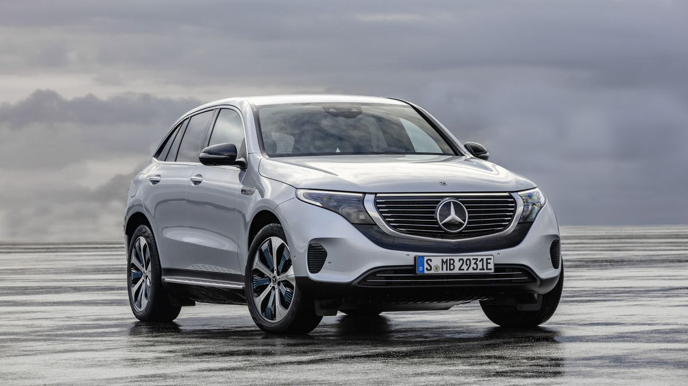
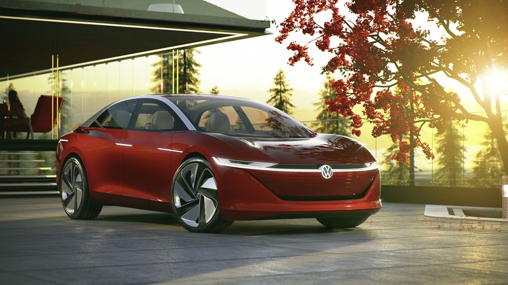
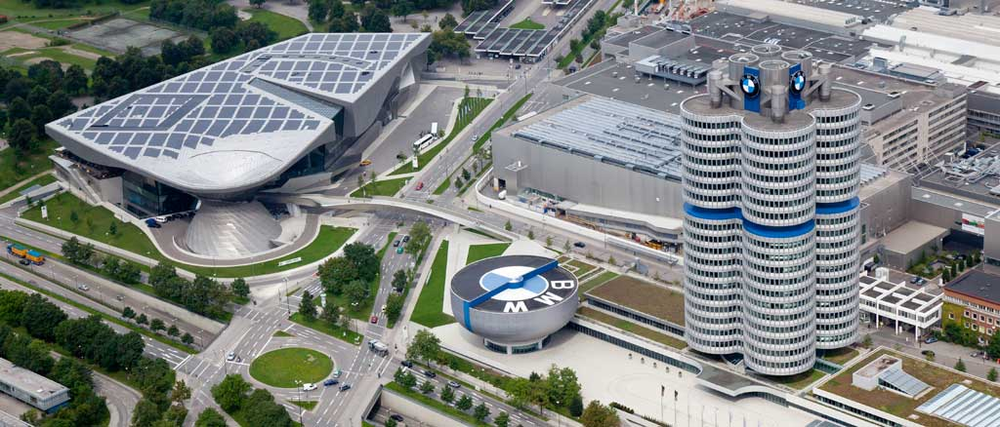
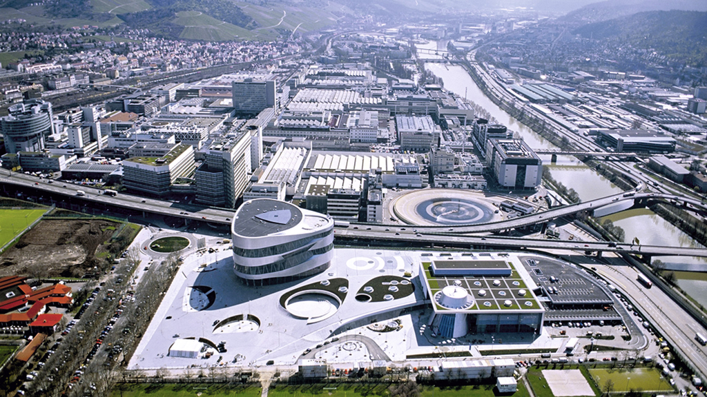
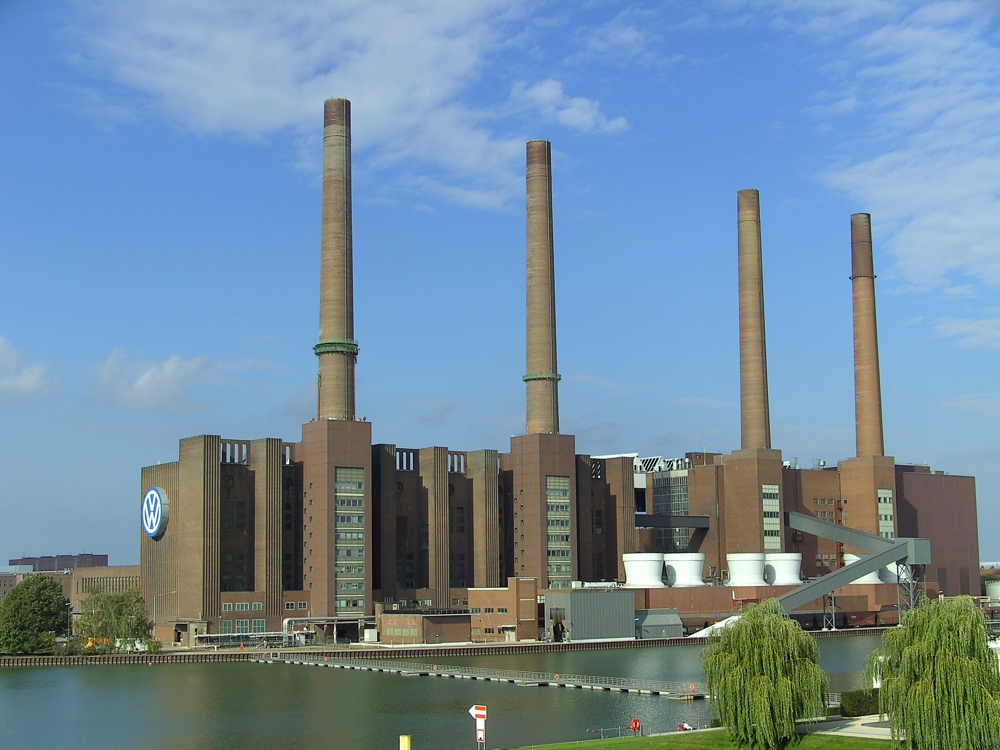

BMW acquired the British Rover Group in 1994, but large losses led to its sale in 2000. However, BMW retained the Mini (marque) name for a line of new cars, all built in Britain from 2001.

1. During the 1990s, BMW opened a production facility for SUVs in Spartanburg County, South Carolina.

BMW also acquired the Rolls-Royce Motor Cars name, effective as of 2003, and in the same year established a joint venture in China named BMW Brilliance.

Daimler-Benz entered into what was initially called a "merger of equals" with Chrysler Corporation in 1998. However, cultural differences and operating losses led to its dissolution in 2007, although Daimler-Benz kept Chrysler's Chinese joint venture, renamed Beijing Benz.

The company also launched the Smart in 1998 and relaunched the Maybach brand in 2002. In addition, during the 1990s they opened a production facility for SUVs in Tuscaloosa County, Alabama.

On 5 July 2012, Volkswagen AG announced a deal with Porsche resulting in VW's full ownership of Porsche on 1 August 2012.